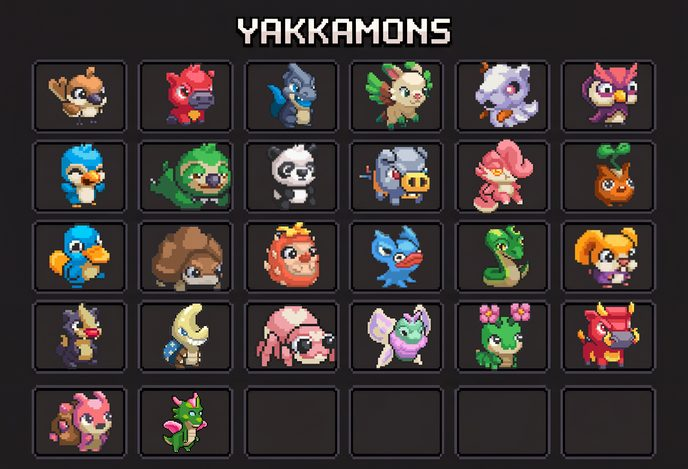

THE GENESIS YAKKAMON
The reveal, counted →The six revealed on October 14, 2026 — every Genesis egg hatched into one of these, or into nothing. Pictures are the reveal art on the NFTs; counts are the whole 11,265-egg collection.
- 11,265Genesis eggs opened: 10,000 minted + 1,265 airdropped
- 10,316Brazito — 91.6% of the collection
- 68Legendaries: 50 Salu · 10 Kova · 5 Ondi · 3 Raigo
- 50Malandrix, the only Rare
- 831Bad Eggs — 7.4%, reveal nothing
-

Raigo was “Storm”
LegendaryDragon3of 11,265 · 1 in 3,755 · 75 will ever existStormcharged — Yakkamon within range work 2× as fast (large AOE)
Hatched from a stone split by lightning. The only large-AOE aura: a whole section of the farm works at double speed.
-

Ondi was “Echo”
LegendaryDragon5of 11,265 · 1 in 2,253 · 275 will ever existYakkamon within range produce double resources (small AOE)
A low hum that makes the two or three jobs beside it come back with twice the haul. Stacks with Raigo.
-

Kova was “Ghost”
LegendaryDragon10of 11,265 · 1 in 1,127 · 400 will ever existUnsleeping — always at maximum stamina on the farm (small AOE)
Wears the skull of a long-dead beast and never sleeps: its neighbors skip the stamina cycle entirely.
-

Salu was “Bloom”
LegendaryDragon50of 11,265 · 1 in 225 · 2,000 will ever existRegenerates a % of Max HP every combat turn
Petals bloom from its scales with every wound it shrugs off. The one battle passive of the four.
-

Malandrix
RarePsychic50of 11,265 · 1 in 225 · 4,000 will ever existNormal working Yakkamon — no ability yet
A quick-pawed trickster in a golden collar it never paid for. Ranks 2,001–5,000 get one in the trainer airdrop.
-

Brazito
UncommonFire10,316of 11,265 · 91.6% · 15,000 will ever existNormal working Yakkamon — no ability yet
A small orange hothead in a blue cape. The free mint’s monster; a Fire type, so type locking decides what it gathers.
Three of the four Legendary abilities are farm auras and only Salu’s is a battle passive; “no ability yet” is what the NFTs say for the two working tiers, whose utilities the team has said are rolled at generation. Unique stats are not on the NFTs yet — a separate reveal is due closer to launch. How the auras stack: Utilities & Auras. Where the other 2,009 Legendaries go: The Genesis Legendaries.
THE WIDER ROSTER26 of the 30 in the early-access build, portraits only — open the sheet
Every creature the team has officially shown on its roster sheet. Only the six Genesis Yakkamon above have names, types and rarities; a portrait on this sheet still says nothing about what one can gather.

EVERY SYSTEM, EXPLAINED
27 systemsSeven groups, twenty-seven systems. Pick one and it opens in the reader below — each system has its own link, so you can share exactly the one you’re reading.
THE WHOLE GAME, ONE PAGE
Revised October 14, 2026 — after the Genesis reveal. A new panel, The Genesis Six, puts Raigo, Ondi, Kova, Salu, Malandrix and Brazito on the sheet with their pictures, types, counts and abilities; Your Yakkamon, Utilities & Auras, The Battle System, the dates and Not Confirmed Yet each picked up the stream’s lines (the six-slot bench, the spirit type, internal beta next week, early access aimed at the end of November, unique stats still to come). Twenty-three panels.
![Field guide poster explaining how Yakkamon works, revised October 14, 2026 after the Genesis reveal: the idle and active halves, the six-step core loop, thirty Yakkamon in the early-access build with six now named, the Genesis Six panel showing Raigo, Ondi, Kova, Salu, Malandrix and Brazito with their pictures, types, counts in the 11,265-egg collection and abilities, rarity set at species level, type locking, the work and stamina cycle with beds as capacity, plot upkeep from use not absence, storage bins, monster care where battle damage sticks until rested, how boosts stack, the Legendary auras with small and large AOE, breeding limits and genetics, your base and a gym that ships before the arena, the three-layer world of tiles, Regions and Chapters where lands never reset, logistics between Regions, a universal clock with hour traits and weather events, seasonal gather-and-craft gates, hunting grounds with affectionate, greedy and angry wild Yakkamon, crafting with lures and bait, the Contracts board, the battle system in the official guide's eight points with the three-plus-three bench underneath, the two-track economy, progression and endgame, the dates (internal beta the week of October 19, early access aimed at the end of November), and the mechanics not yet confirmed.](gameplay-poster-full.png)
The whole game on one sheet, revised after the October 14 Genesis reveal. On a phone, read the full field guide instead — same material, laid out for a small screen. Sourced from the official docs, the dev streams, the NFT metadata and official screenshots; made by us, not the Yakkamon team.
READ THE FIELD GUIDE → OPEN FULL SIZE ↗QUICK REFERENCE
86 numbersEvery number the team, the docs or the screenshots have actually shown, with where it came from. Type to filter, or open the whole table.
OPEN THE TABLE86 rows, newest facts first in each topic
| Thing | Value | Where it came from |
|---|---|---|
| Yakkamon in early access | 30 in the build (26 shown publicly; six of them now named and revealed: Raigo, Ondi, Kova, Salu, Malandrix, Brazito); more per Chapter — the older figure was 50–60 at launch | Sep 17 stream + Oct 14 reveal |
| The Genesis reveal | 11,265 eggs opened October 14: 10,316 Brazito (91.6%), 50 Malandrix, 50 Salu, 10 Kova, 5 Ondi, 3 Raigo and 831 Bad Eggs (7.4%) that reveal nothing | NFT metadata, Oct 14 (our count) |
| Minted vs airdropped eggs | 10,000 minted (63 Legendaries, 38 Malandrix, 9,068 Brazito, 831 Bad Eggs) · 1,265 airdropped on Oct 13 (5 Legendaries, 12 Malandrix, 1,248 Brazito, no Bad Eggs) | NFT metadata, Oct 14 |
| Legendary odds, realized | One clean minted egg in 146 held a Legendary; one in 241 a Malandrix; 98.9% a Brazito | NFT metadata, Oct 14 (the odds table) |
| Bad Eggs | 831 at the reveal — down from the 973 quoted on September 17; all in the minted 10,000, none among the airdropped eggs | NFT metadata, Oct 14 + Sep 17 stream |
| Genesis types | Raigo, Ondi, Kova and Salu are Dragon; Malandrix is Psychic; Brazito is Fire | NFT metadata, Oct 14 |
| Unique stats on the NFTs | Not yet — beta balancing comes first; a separate small reveal is due closer to launch | Oct 14 stream |
| Levels built | 36, with the Legendaries already in the world | Sep 17 stream |
| Battle format | Auto battler, real time — a setup stage where you drag and place your team freely, then they fight on their own; 70% pre-battle planning, 30% live input | Battles guide (Sep 24) + Sep 17 stream (replaces Aug 21’s lane-based 3v3) |
| Setup stage | Position your side however you like — front / back and where each type stands matter; the enemy team is visible to scout | Battles guide (Sep 24) |
| Squad size | Some fights are 1v1; most are team fights with several per side plus reserves on the bench. Latest shape: three on the field and up to three on the side who jump in through player actions — “three to six” is what beta will test | Oct 14 stream + Battles guide (Sep 24) |
| Battle stats | Health, Attack, Defense, Speed | Sep 17 stream |
| Skills | A normal attack plus condition-triggered skills (“heal below half health”, “stun whoever fainted me”); you choose which skills each Yakkamon carries in; every skill has a type | Battles guide (Sep 24) + Sep 17 stream |
| Skills per individual | Skills are generated: two Yakkamon of the same species can carry different skills, some rarer than others — you hunt for the one with the rare skill. Farming skills exist outside battle too | Oct 14 stream |
| Type matchups | Every Yakkamon and every skill has a type — a weakness “cranks up” damage, a resistance dulls it; chart unpublished | Battles guide (Sep 24) |
| Live input | Substitutions (call one back, sub in a reserve) and battle items dragged onto the field: potion on an ally, debuff on an enemy, shield before a big hit; the stream showed potions + an experimental AOE “blizzard pot” | Battles guide (Sep 24) + Sep 17 stream |
| Preparation item | One per fight, equipped beforehand, buffs the whole team from the opening bell | Battles guide (Sep 24) |
| Kinds of fight | Wild encounters & hunt battles, event fights, live PvP, player-made gyms (a team you leave behind wins for you offline) | Battles guide (Sep 24) |
| Damage between fights | Sticks until rested or healed — manage the roster between battles | Battles guide (Sep 24) |
| Battle rewards | In-game items, XP for the Yakkamon who fought, trainer-level XP; a beaten wild Yakkamon may join you | Battles guide (Sep 24) |
| Typical battle length | 3–5 rounds, under a minute | Aug 21 stream (not restated since) |
| Battle variance target | The “average” fight is under 40% of all fights | Aug 21 stream (not restated since) |
| Boost stacking | Same ability doesn’t stack — even on two different creatures; different abilities do | Aug 21 stream, reconfirmed Sep 17 |
| Rarity assignment | Set at species level — no rare variants of commons | Aug 21 stream |
| Types at launch | 13, one type per Yakkamon; dual types later. Named so far: electric, fire, water, grass, a spirit type (“rather than a ghost type”), plus the Dragon and Psychic the reveal showed; the chart itself is unpublished | Free-mint stream + Oct 14 stream |
| Wearable gear | None — possibly one held item | Free-mint stream |
| Genesis supply, total | Raigo 75 · Ondi 275 · Kova 400 · Salu 2,000 · Malandrix 4,000 · Brazito 15,000 (10,316 already out — “not infinite”) | Yakkapedia (official docs) + Oct 14 stream |
| Legendary abilities | Raigo: Stormcharged, in-range work 2× as fast (large AOE) · Ondi: in-range double resources (small AOE) · Kova: Unsleeping, in-range always at max stamina (small AOE) · Salu: regenerates % Max HP per combat turn · Malandrix and Brazito: “normal working Yakkamon, no ability yet” | NFT metadata + Yakkapedia (official docs) |
| Small vs large AOE | Small = the job it stands on and the 2–3 nodes beside it; large = a whole section of the farm | Free-mint stream |
| Utility stacking | Additive and multiplicative combinations exist — Storm + Echo (now Raigo + Ondi) confirmed | Free-mint stream |
| Rare / Uncommon utilities | Randomly rolled at generation, independent of stats | Free-mint stream |
| Legendaries in the Genesis collection | 68 — 3 Raigo, 5 Ondi, 10 Kova, 50 Salu (plus 50 Malandrix) — drawn across all 11,265 eggs, clean eggs only; 63 of them landed in minted eggs, 5 in airdropped ones | Official docs + NFT metadata, Oct 14 |
| The trainer airdrop | Top 2,000 on the leaderboard get a Legendary (2,009 in all), ranks 2,001–5,000 get Malandrix — the raffle tickets are used here, not in the free mint, for a small number of Legendaries | Official docs, reconfirmed Oct 14 stream |
| Eve-of-reveal airdrop | 1,265 sealed eggs on Oct 13: Ronin’s top 1,000 spenders, the top 100 trainers, the top 100 Sunflower Land players, the fan art winners, creators and supporters (the docs had said 1,500) | Oct 14 stream + NFT metadata |
| Active Yakkamon cap | None — as many as you have jobs for | Free-mint stream |
| Being away | Pauses — bins fill, jobs stop, no decay, no neglect penalty | Free-mint stream |
| Storage bins | Now one bin per resource | Free-mint stream |
| Resting | Tired Yakkamon walk to a bed, sleep and go back to work — after battles too; too few beds and they queue | Sep 17 stream |
| Plot degradation example | 1.6× slower until refertilized | Job card screenshot |
| Time split the team is aiming at | Roughly 50/50 or 30/30/30 farm / combat / market | Aug 21 stream |
| Starter storage bin | Cap of 20 | Early-game screenshot |
| Later storage bin | Cap of 120, shows “MAX” when full | UI mock-up |
| Expansion unit | Tiles, unlocked with gathered resources; each raises how much you can run at once | Regions post (Aug 28) |
| First land expansion | 10 Wood + 1 Stone | Early-game screenshot |
| What a tile can hold | Resource nodes, build space, or a hunting area | Regions post (Aug 28) |
| Hunting Area entry | 5 berries | Early-game screenshot |
| New Regions | Unlocked by growing your starting Region; each has its own resources and monster types | Regions post (Aug 28) |
| Named Regions so far | Grasslands (starter, from the in-game Updates panel); Water Region (official post) | Updates panel + Regions post |
| Old Regions | Stay active — you manage every Region you have unlocked at once; lands never reset | Regions post (Aug 28) + Sep 17 stream |
| Cross-Region resources | Moved and shared between Regions — “the real puzzle”; mechanic unpublished | Regions post (Aug 28) |
| Region size | Each new Region bigger than the last; more arrive per Chapter | Regions post (Aug 28) |
| New monster drops | Every 3 months (weekly still under consideration) | Docs + Aug 6 stream |
| Type locking | Grass gathers Wood; Fire is blocked outright | In-game message |
| Hunts per Yakkamon | Unlimited — the hunting ground depletes instead | Free-mint stream |
| Hunting ground areas | Three shown; swamps and water areas to come; lures target a type | Free-mint stream |
| Wild encounters | Aggressive (red alert, battle) or ambient (bait and a short dialogue) | Free-mint stream |
| Wild temperaments | Affectionate (must be won over), greedy (wants resources first), angry (battle) | Hunting post (Sep 5) |
| Spawn timing | Different Yakkamon at different times of day per ground — on the in-game clock | Hunting post (Sep 5) |
| Wild Legendaries & Rares | Appear sporadically in ordinary grounds, no schedule | Hunting post (Sep 5) |
| Depleted grounds | Spread hunts across grounds and Regions; regeneration rate unpublished | Hunting post (Sep 5) |
| Seasons and hunting | Change which Yakkamon are available and where, Chapter to Chapter | Hunting post (Sep 5) |
| Contracts | Standing requests for specific Yakkamon on a board that changes every day — each Contract asks for different Yakkamon | Contracts post (Oct 2026) |
| Contract pay | Coin, plus specific items you can’t gather or craft | Contracts post (Oct 2026) |
| Contract requirements | A species; sometimes the right type, traits or a particular skill; some also want goods from your farm | Contracts post (Oct 2026) |
| Contract timing | The wanted Yakkamon may only roam one ground, at one time of day, in one season; every Contract expires, high-value ones on short windows | Contracts post (Oct 2026) |
| Contracts later on | A big part of chapter content, and of grinding toward some of the Legendaries | Contracts post (Oct 2026) |
| Contract deliveries | Consume the Yakkamon handed in — the main sink for surplus monsters, “hungrier” than generation | Aug 6 & Aug 13 streams (not restated in the post) |
| Initiative | Coin flip, unless a lane holds the type advantage | Free-mint stream (lane design, since loosened) |
| Lane order | Lane 1, then 2, then 3, every round | Free-mint stream (lane design, since loosened) |
| Abilities per monster | 2–3, fired in a preset order | Free-mint stream (superseded Sep 17 by condition-triggered skills) |
| Trait roll predictability | Roughly 80–90% | Aug 13 stream |
| Breeding limit | Scales with rarity — commons above replacement, rares around it, some Legendaries once; bred Yakkamon tradable | Free-mint stream (supersedes Aug 13) |
| Evolutions | Not at launch | Free-mint stream |
| Free-to-play layer | Unlimited production, but untradable; Coin gates the tradable layer, and Contracts pay it | Free-mint stream + Contracts post (Oct 2026) |
| Login method | Email, wallet optional | Aug 21 stream |
| Orientation | Landscape; PWA install recommended | Aug 21 stream |
| Client source | Will be open sourced | Aug 13 stream |
| Chain and token | Ronin, using $FLOWER — no new token | Official docs |
| PvP | After launch, not in early access; the full competition arena is aimed at early next year | Aug 6 + Sep 17 streams |
| Gyms | Working internal prototype; a version ships before the arena, outside the core reward loop | Sep 17 stream |
| Early access | November or December 2026 (docs); the team aims at mid-to-late November — “the end of November” if all goes to plan — with the exact date and the leaderboard lock announced two to three weeks ahead | Official docs + Oct 14 stream |
| Beta testing | Internal beta opens the week of October 19; a tiny invitation-only group, no applications; early access is the broad beta; expect leaks | Oct 14 stream |
| Creature sounds | Every Yakkamon gets its own walking and interaction sounds; 168 species sounds queued to go in; animations in progress | Oct 14 stream |
| Chapter 0 & first hunt | Docs: Chapter 0 and the first NFT monster hunt one month after early access. Stream: first hunt ~6 weeks in, Chapter Zero 6–8 weeks in | Official docs + Sep 17 stream |
| Guilds & alliances | Deferred behind core functionality, no timeline | Aug 21 stream |
| Economy resets | Ruled out entirely | Aug 13 & Aug 21 streams |
Nothing matches that — try a shorter word.
NOT CONFIRMED YET
26 open questionsThe gaps worth tracking — and the reason nobody can build a reliable calculator or roster planner for this game yet.
OPEN THE LIST26 things the team hasn’t published, from stat numbers to the exact dates
- Stat numbersThe four battle stats are named — Health, Attack, Defense, Speed — and stats vary per individual with hidden initial values on spawn. The roll ranges, any non-battle stats, and how much of it is visible in game are unknown. The revealed NFTs carry no stats yet: the team said on October 14 that balancing waits for beta and a separate small reveal about unique stats comes closer to launch.
- Work cycle numbersCycle duration, stamina cost per cycle, yield per cycle, and sleep recovery rate.
- Tile numbersHow many tiles a Region holds, what each tile past the first costs, and how many parallel jobs a tile actually adds. Only the 10 Wood + 1 Stone starter price is public.
- The Region unlock condition“Grow your starting Region” is all the post says. Whether that is a tile count, a quest, a level or a resource payment is unknown.
- The transfer mechanicMoving resources between Regions is called a core strategy, but nothing says what it costs — time, stamina, a building, a fee — or whether monsters move freely.
- Upkeep numbersThe degradation rate, the fertilizer recipe, real plot-group sizes and how steeply upkeep scales. Only the 1.6× example figure is public.
- Full type chartOnly Grass→Wood is confirmed for gathering. Combat type effectiveness is now official in principle — weaknesses raise damage, resistances lower it, and skills carry types of their own — but the chart itself is unpublished.
- Skills and their triggersSkills fire on conditions on top of a normal attack, every skill has a type, and you choose which skills a Yakkamon carries into a fight — but the skill list, how many slots a Yakkamon has, where its pool of skills comes from (bred, extracted, learned) and how that squares with August’s expensive extraction respecs are all unpublished.
- Squad, bench and items“Several per side” plus reserves is the official shape; the October 14 stream put it at three on the field and up to three in reserve, “three to six”, as the number beta will test — not final, and not stated per fight type. Potions, debuffs, shields and a single preparation item are named; how many items a fight allows, what they cost to craft, and what a preparation item actually does are unknown.
- Healing and restBattle damage persists until a Yakkamon is rested or healed, but how long rest takes, whether a bed heals as well as restores stamina, and which items heal outside a fight are unpublished.
- Leveling & traitsXP costs, the real level cap, the full trait list, and how much each level actually adds.
- Rarity distributionTiers are now clear, but not how many species sit in each, nor the drop rates.
- Egg mechanicsRare egg breakdowns are separated out, but hatch rates and sources aren’t public.
- Evolution triggersConfirmed to be per-monster and deliberately hidden. The team has said the game will hint rather than explain, so expect this to stay unknown by design.
- Utility numbersThe Legendary abilities are published as text only. The radius of a small or large AOE, Salu’s regeneration percentage, and every Rare and Uncommon utility are still unpublished — the revealed Malandrix and Brazito NFTs say “no ability yet”, and the team says values are being balanced up to release.
- The type chart, part twoThirteen types are confirmed, and the count of weaknesses per type (two for dragons, three for everyone else). Named so far: Dragon, Psychic and Fire on the Genesis six, plus electric, water, grass and a “spirit” type from the October 14 stream — still not the full thirteen, nor the chart itself.
- Battle numbersBalancing is the team’s named remaining hurdle, so damage, speed order and the size of the type-weakness and type-resistance multipliers will keep moving through beta. Battle XP amounts and trainer-level rewards are unpublished too.
- CoinsHow much Coin a tradable unit costs, the burn rates that produce it, how much a Contract pays, and whether Coin can be bought. The official Contracts post writes the name as Coin; the stream had floated a rename.
- Hunting ratesThe official Hunting post describes the system with no numbers: how long an in-game day lasts, how fast a ground regenerates, how often a Legendary appears, what a greedy monster charges, and what an affectionate one judges a hunter on. Also unstated: whether a ground is your own tile or shared with other trainers — and as of September 17 the hunting mechanics are still being prototyped.
- Contract numbersHow much Coin a Contract pays and which items; how many Contracts a board holds and how long a short window lasts; whether “every day” is a real day or an in-game one, and whether every trainer sees the same board; whether a bought or bred Yakkamon can fill one; whether a delivered Yakkamon is consumed (the streams said yes, the post doesn’t say); what the Legendary grind counts; and whether the board opens at early access or with Chapter 0.
- The exact datesThe team’s spoken aims (internal beta the week of October 19, early access mid-to-late November — “the end of November” on October 14 — announced two to three weeks ahead, Chapter Zero six to eight weeks later) sit beside the official docs’ November-or-December and one-month figures. The docs are the record until they change.
- The trainer raffleOne of each Genesis Legendary is reserved for a raffle, and the October 14 stream said the raffle tickets are used at the final trainer airdrop, not in the free mint. No rules, date or entry condition has been published.
- The lifted Bad Egg flags973 Bad Eggs on September 17, 831 at the reveal. The team hasn’t said what cleared the 142 — appeals, a final re-review, or something else — or whether the count is now closed.
- The rest of the airdropThe free mint page promised 1,500 extra event eggs; 1,265 were airdropped on October 13. Whether the remaining 235 go out later, and whether trainer-airdrop Legendaries arrive revealed, is unstated.
- The dragons’ loreRaigo, Ondi, Kova and Salu are “a suite of ancient dragons” with a backstory the team is holding until after launch. Nothing beyond the one-line descriptions on the NFTs is published.
- Endgame featuresInfinite levels and sinks are planned but explicitly not locked down — they arrive after early access.